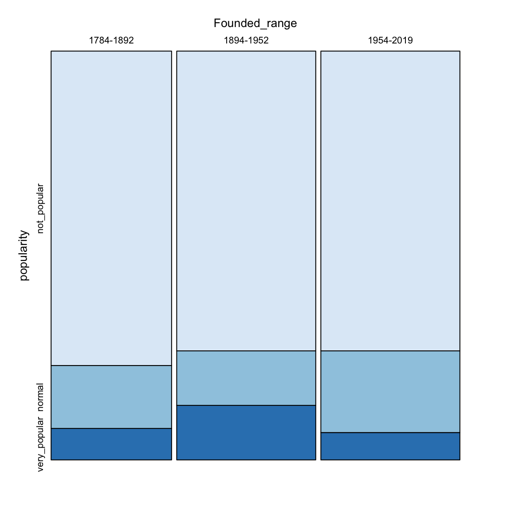
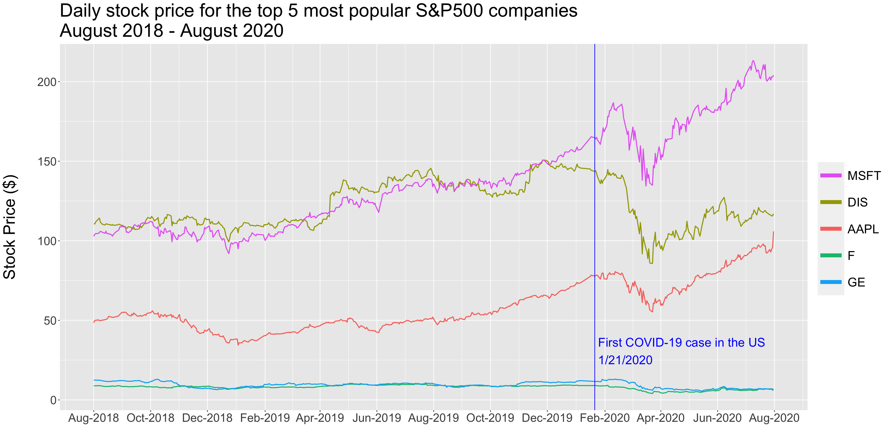
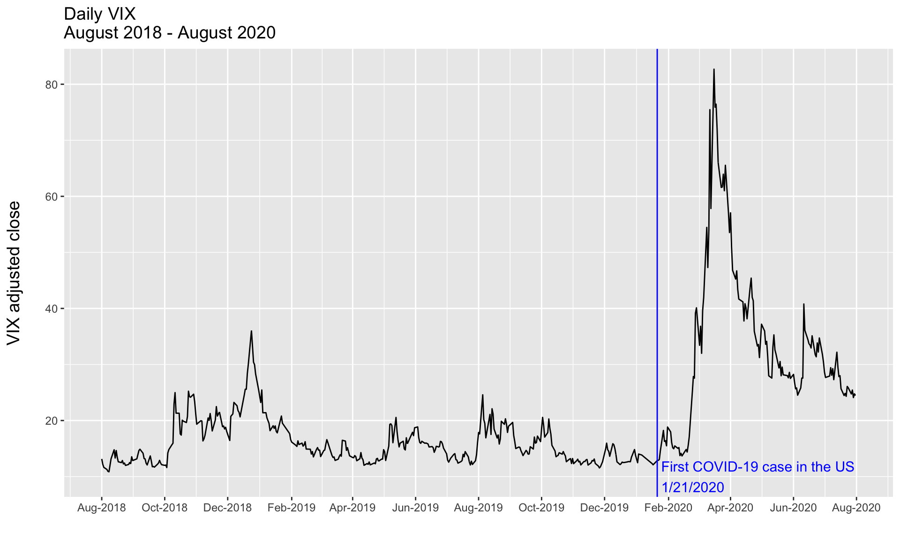

Chapter 5 Results
The main focus of our analysis will examine Robintrack’s users stock holding of the S&P500 companies between August 2018 - August 2020. We will explore how price, market cap, industry and founding year affect user’s holding.
5.1 Average ownership per year by industry
The first transformed dataframe the average user’s stock holding per industry for 2018, 2019 and 2020.
In order explore the shifts in the most popular industries between 2018-2020, we have created a Clevland plot for which we have sorted the y axis in descending order for the users holding on 2020.

Some insights that we can extract from the above plot are:
We can see a jump in users holding for across all industries between 2018/2019 and 2020. A possible explanation is that retail trading has taken off in 2020 amid the coronavirus downturn that many young traders saw as an entry point into the world of investing.
This jump is especially evident in the following industries;
Comunication Services,Consumer Discretionary,IndustrialsandEnergy.The largest jump in user’s holding between 2019 and 2020 was in the
Consumer Discretionaryindustry. A possible explanation could be the increased interest of the Amazon (AMZN) stock during the pandemic.Even though
Information Technologyindustry had the second highest average user’s holding in 2018 and 2019, in 2020 it dropped to 4th place.Similarly in 2018 & 2019
Energyindustry was less attractive thanConsumer Staples. However, in 2020Energyattracted more stock holders. ``Another evident trend is that
Utilities,MaterialsandReal Estatehas similar average user’s holding between 2018 and 2019. On the other hand the rest of the industried have experienced and increase in user’s holding between these two years.Moreover,
Consumer StaplesandIndustrialsindustries have almost the same stock holding between 2018 and 2019. That trend was broken in 2020 whenIndustrialsalmost tripled in user’s holding compared toConsumer Staples.
5.2 Exploring the relationship of founding date vs popularity level
As mentioned in the data transformation section, we measure a stock’s popularity by averaging amount of user’s holding acrross 2018-2020. We assign each company to a popularilty group by using KMeans clustering(k=3) for the avergage user’s holding over those 3 years. The three popularity categories are; not_popular(n=473), normal(n=16) and very_popular(n=5).
Moreover, as mentioned in the transformation section, we have also split the companies in three fouding dates ranges. We again used KMeans clustering(k=3) in order to group the S&P500 companies in three age groups for which we recorded the minimum and maximum founding rate in each group as their label. More specifically the three founding ranges are;1784-1892(n=247),1894-1952(n=400), 1954-2019(n=798).

In the above mosaic plot we can see that there is a correlation between the age of a company and its popularity. More specifically:
We can see that for the less popular companies there is an equal amount of observations across all three founding ranges.
When comparing the normal and the less popular companies we can see an increase in popularity as the founding date becomes more recent.
Moreover, even though the oldest copanies are the ones that appear the least across the very popular companies, we can see that the medium founding range companies (
1894-1952) are the the most across thevery_popular.We would have been able to identify a positive correlation between how recently a company was founded and how popular the company is amongst Robinhood users. However this trend is broken in the
very_popularcompanies.
A possible explanation of the partial positive correlation between founding year and popularity could due to the fact that Robinhood’s average customer is young1 and therefore is more aware of the more recently founded companies.
5.3 A deeper look into the very_popular companies



